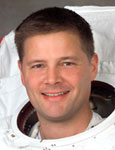

Lyndon B. Johnson Space Center
Houston, Texas 77058
|
National Aeronautics
and Space Administration Lyndon B. Johnson Space Center Houston, Texas 77058 |
 |
Biographical Data |
||
Douglas H. Wheelock (Colonel, USA)
NASA Astronaut
PERSONAL DATA: Born in Binghamton, New York, and considers Windsor, New York, to be his hometown. Doug’s parents, Olin and Margaret Wheelock, reside in upstate New York.
EDUCATION:
• Windsor Central High School, Windsor, New York, 1978
• Bachelor of Science, Applied Science and Engineering, United States
Military Academy, West Point, New York, 1983
• Master of Science, Aerospace Engineering, Georgia Tech, Atlanta,
Georgia, 1992
AWARDS: Defense Superior Service Medal; Legion of Merit Medal; Defense Meritorious Service Medal; Meritorious Service Medal (First Oak Leaf Cluster); Air Medal; Army Commendation Medal; Army Achievement Medal (First Oak Leaf Cluster); NASA Distinguished Service Medal; NASA Space Flight Medal (second award); Army Good Conduct Medal; National Defense Service Medal (First Bronze Star); Afghanistan Campaign Medal (two Campaign Stars); Global War on Terrorism Expeditionary Medal; Global War on Terrorism Service Medal; Korea Defense Service Medal; NATO Medal (second award); Army Service Ribbon; Overseas Service Ribbon; Airborne Wings; Air Assault Wings; Master Army Astronaut Wings; Air Force Space and Missile Badge; Air Force Master Space Badge
SPECIAL HONORS: Russian Medal of Merit for Space Exploration (2012); Doctor of Science (honoris causa), Oklahoma Christian University (2012); American Red Cross Hero in Space Award (2010); Fédération Aéronautique Internationale Yuri Gagarin Gold Medal Award (2010); American Astronautical Society Flight Achievement Award (2008); NASA Superior Accomplishment Award (2002, 2004, 2005 and 2008); Order of St. Michael (Bronze Award) from the Army Aviation Association of America (2007); NASA Group Achievement Awards: Russian Liaison Support Team (2001) and Global Positioning System (1997); Gamble Award for Excellence in Experimental Flight Testing (1995); Team Leader of the Georgia Tech Aerial Robotics Design Team (1992); Veterans of Foreign Wars Outstanding Spokesman for Freedom (1990); U.S. Jaycees Ten Outstanding Young Men of America (1989); 25th Infantry Division Flight Safety Award (1986 and 1989); Distinguished Graduate of the U.S. Army Flight Training Course (1984). Member of the Society of Experimental Test Pilots, the Society of American Military Engineers, the Association of the United States Army, the Army Aviation Association of America, the West Point Association of Graduates and the Georgia Tech Academy of Distinguished Engineering Alumni (2007).
EXPERIENCE: Colonel Wheelock received his commission as a Second Lieutenant in the Army Infantry from West Point in May 1983. He entered flight school in 1984, graduated at the top of his flight class and was designated as an Army Aviator in September 1984. He served in the Pacific Theater as a combat aviation Section Leader, Platoon Leader, Company Executive Officer, Battalion Operations Officer and Commander of an Air Cavalry Troop in the Ninth U.S. Cavalry. He was later assigned to the Aviation Directorate of Combat Developments as an Advanced Weapons Research and Development Engineer. He earned a Master of Science degree in Aerospace Engineering from Georgia Tech in 1992 with research in the areas of hypersonic and high-temperature gas dynamics, flight stability & control and robotics. He is a graduate of Class 104 from the U.S. Naval Test Pilot School and was subsequently assigned as an Experimental Test Pilot with the Army Aviation Technical Test Center (ATTC). His flight testing was focused in the areas of tactical reconnaissance and surveillance systems in a variety of fixed and rotary-wing aircraft. He served as Division Chief for testing of Army Scout/Attack aircraft and weapons systems in support of tactical operations in the Balkans. Colonel Wheelock’s work as a test pilot culminated in his assignment as Division Chief for fixed-wing testing of airborne signal and imagery intelligence systems in support of the National Program Office for Intelligence and Electronic Warfare. He completed his military career as the Commander of the U.S. Army Space & Missile Defense Command - NASA Detachment. Colonel Wheelock is a veteran of three combat tours and 38 combat missions in support of Operation Enduring Freedom. He is also a graduate of the Army Airborne and Air Assault Courses, the Infantry and Aviation Officer Advanced Courses, the Combined Arms Services Staff School, the Material Acquisition Management Course and the U.S. Army Command and General Staff College.
Colonel Wheelock is a dual-rated Master Army Aviator and has logged more than 7,000 flight hours in 46 different rotary and fixed-wing aircraft and spacecraft. He is also an FAA-rated commercial pilot in single- and multi-engine land craft, rotorcraft and gliders.
NASA EXPERIENCE: Colonel Wheelock reported for Astronaut Candidate Training in August 1998. He was assigned to the Astronaut Office International Space Station Operations Branch as a Russian Liaison, participating in the testing and integration of Russian hardware and software products developed for the station. He worked extensively with the Energia Aerospace Company in Moscow, Russia, and has led joint U.S./Russian teams to the Baikonur Cosmodrome in Kazakhstan to oversee bench reviews, inventory, loading and launch of the first four unmanned International Space Station (ISS) resupply capsules.
In 2001, Colonel Wheelock assumed duties as the Crew Support Astronaut for the International Space Station Expedition 2 and Expedition 4 crews. He was the primary contact for all crew needs, coordination, planning and interactions and was the primary representative of the crews while they were on orbit. In August 2002, Colonel Wheelock was assigned as a Capsule Communicator (CAPCOM) in the Mission Control Center in Houston. In this role, he was the primary communication link between crews on orbit and the ground support team in the Mission Control Center. He was the lead CAPCOM for ISS Expedition 8.
In January 2005, Colonel Wheelock was assigned to the Gagarin Cosmonaut Training Center (GCTC) in Star City, Russia, as NASA’s Director of Operations - Russia. He was responsible for supporting Russian-based training, logistics and administrative needs of NASA astronauts preparing for flight on the International Space Station. Colonel Wheelock was the primary liaison between Star City and NASA operations in Houston, including medical, training, science, contracting, public affairs and administration departments. He was also responsible for liaison duties between NASA and the Russian Space Agency as well as the Russian aerospace industry.
Colonel Wheelock completed training in the NASA Extreme Environments Mission Operations (NEEMO) program, during a 10-day undersea mission aboard the National Undersea Research Center’s Aquarius habitat. Colonel Wheelock has flown aboard the space shuttle, the International Space Station and the Russian Soyuz TMA spacecraft. He has accumulated more than 178 days in space and has conducted six spacewalks totaling 43 hours and 30 minutes. His experience outside of the station includes four contingency spacewalks to repair a torn solar array and replace a failed ammonia pump module.
SPACEFLIGHT EXPERIENCE: STS-120 Discovery (October 23 to November 7, 2007) launched from and returned to land at Kennedy Space Center, Florida. During the mission, the Node 2 module, Harmony, was delivered to the International Space Station. This element opened up the capability for future international laboratories to be added to the station. Wheelock accumulated 20 hours and 41 minutes of EVA during three spacewalks. One of the major EVA mission objectives was the relocation of the P6 Solar Array from the top of the Z1 Truss to the end of the port side of the Integrated Truss Structure. During the redeploy of the solar array, several array panels snagged and were damaged, requiring an unplanned spacewalk to successfully repair the array. The American Astronautical Society’s Flight Achievement Award was presented to the spacewalkers for demonstrating the importance of ingenuity and heroism in exploring space. The mission was accomplished in 238 orbits, traveling 6.2 million miles in 15 days, 2 hours and 23 minutes.
Soyuz TMA 23S Olympus/International Space Station Expedition 24/25 (June 15 to November 25, 2010) - Colonel Wheelock launched from the Baikonur Cosmodrome as a Flight Engineer on the Russian Soyuz spacecraft for a 2-day autonomous flight to the station. He began his long-duration stay aboard the orbiting outpost as a Flight Engineer for Expedition 24 and then assumed command of the station and the Expedition 25 crew. During Expedition 25, there were more than 120 microgravity experiments in human research, biology and biotechnology, physical and materials sciences, technology development and Earth and space sciences. Colonel Wheelock also responded to an emergency shutdown of half of the station’s external cooling system and was the lead spacewalker for three unplanned EVAs to replace the faulty ammonia pump module that caused the shutdown. His efforts restored the station’s critical cooling system to full function. For his actions during this challenging time, Colonel Wheelock was presented the American Red Cross 2010 Hero in Space Award, and the Fédération Aéronautique Internationale 2010 Yuri Gagarin Gold Medal Award. The mission duration was 163 days and culminated in a parachute landing in the Olympus capsule in Kazakhstan.
To date, Colonel Wheelock has accumulated more than 178 days in space.
JANUARY 2013